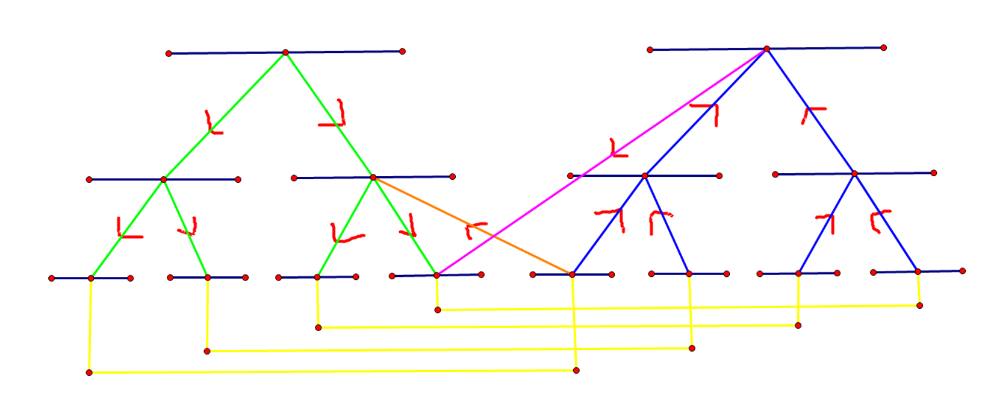

线段树优化建图
Legacy
题意：
有三种建边方式：
- 给出两点
u，v,连一条权值为w的有向边。 - 从
u连向[l,r]这一区间的所有点，边权为w。 - 从
[l,r]这一区间的所有点连向u，边权为w。 求最短路。
如果用 \(n^2\)暴力建边，肯定会超时。所以一定需要用到一些技巧。
看到区间[l,r]，不由自主的想到线段树，利用线段树如何实现优化建图呢？
以操作2为例。
如果有一个点要与 [1,3] 的点连边权为 w 的边，那么我们建出线段树，然后连边。

此时，该点与区间相连，而为了到最后的叶子节点，每个大区间都需要向下与小区间连一条权值为 \(0\) 的边。
同理，操作3与之相同，只不过是连边的方向不同罢了。
那么操作2和操作3同时进行该怎么办呢？
我们可以建两棵线段树。一棵树自上而下连边，另一棵自下而上连边。
对于 \(2\) 操作，你就从第二棵线段树的叶子节点向第一棵线段树中的对应区间连边（下图中橙色的边）。
对于 \(3\) 操作，你就从第二棵线段树中的对应区间向第一棵线段树中的叶子节点连边（下图中粉色的边）。
还有一点，就是两棵线段树的叶子节点实际上是同一个点，因此要在它们互相之间连边权为\(0\)的边（下图中黄色的边）

code
#include <bits/stdc++.h>
using namespace std;
#define int long long
#define i128 __int128
#define up(a,b,c) for(int a=b;a<=c;a++)
#define dn(a,b,c) for(int a=b;a>=c;a--)
#define pii pair<int,int>
#define ls k<<1
#define rs k<<1|1
const int N=5e5;
const int mod=998244353;
namespace IO{
inline int read(){
char c=getchar();int x=0,fh=0;
while(c<'0'||c>'9'){fh|=c=='-';c=getchar();}
while(c>='0'&&c<='9'){x=(x<<1)+(x<<3)+(c^48);c=getchar();}
return fh?-x:x;
}
inline void wt(int x){
if(x<0){x=-x;putchar('-');}
if(x>9)wt(x/10);
putchar((x%10)^48);
}
inline void write(int x,bool op){
wt(x);
putchar(op?'\n':' ');
}
}using namespace IO;
int n,qq,s;
int a[100500];
vector<pii>g[1000505];
inline void build(int k,int l,int r){
if(l==r){
a[l]=k;
return;
}
int mid=(l+r)>>1;
g[k].push_back({ls,0});
g[k].push_back({rs,0});
g[N+(ls)].push_back({k+N,0});
g[N+(rs)].push_back({k+N,0});
build(ls,l,mid);
build(rs,mid+1,r);
}
inline void add(int k,int l,int r,int x,int y,int u,int w,int op){
if(x<=l&&r<=y){
if(op==2)g[u].push_back({k,w});
if(op==3)g[k+N].push_back({u,w});
return;
}
int mid=(l+r)>>1;
if(mid>=x)add(ls,l,mid,x,y,u,w,op);
if(mid<y)add(rs,mid+1,r,x,y,u,w,op);
}
priority_queue< pii,vector<pii>,greater<pii> > q;
bool vis[1005000];
int dis[1005000];
inline void djs(){
memset(dis,0x3f,sizeof dis);
dis[a[s]]=0;
q.push({0,a[s]});
while(q.size()){
int u=q.top().second;q.pop();
if(vis[u])continue;
vis[u]=1;
for(auto i:g[u]){
int v=i.first,w=i.second;
if(dis[v]>dis[u]+w){
dis[v]=dis[u]+w;
//cout<<dis[v]<<endl;
q.push({dis[v],v});
}
}
}
}
signed main(){
n=read();qq=read();s=read();
build(1,1,n);
up(i,1,n){
g[a[i]].push_back({a[i]+N,0});
g[a[i]+N].push_back({a[i],0});
}
int op,l,r,u,v,w;
while(qq--){
op=read();
if(op==1){
u=read();v=read();w=read();
g[a[u]].push_back({a[v],w});
}
else{
u=read();l=read();r=read();w=read();
add(1,1,n,l,r,a[u],w,op);
}
}
djs();
up(i,1,n){
if(dis[a[i]]>=1e17)printf("-1 ");
else printf("%lld ",dis[a[i]]);
}
return 0;
}